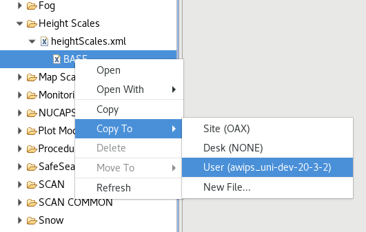

Localization perspective
Localization Levels
AWIPS uses a hierarchical system known as Localization to configure many aspects of EDEX and CAVE, such as available menu items, color maps, and derived parameters. This system allows a user to override existing configurations and customize CAVE. For example, a User-level localization file will supercede any similar file in a higher level (such as Site).
There are three levels of localization, starting with the default BASE
- BASE - default
- SITE - 3-letter WFO ID (required) overrides base
- USER - user-level localization overrides site and base
- SITE - 3-letter WFO ID (required) overrides base
Localization Editor
The Localization Perspective acts as file editor for the XML, Python, and text files which customize the look and feel of CAVE. This perspective is available in the menu CAVE > Perspective > Localization.
Users may copy and add files to available directories at their own User localization version.
Examples of things that can be accessed through the perspective include (this list is not all-inclusive):
-
NCP Predefined Areas, Color Maps and Style Rules
-
D2D Volume Browser Controls
-
D2D Bundles - Scales (WFO, State(s), etc.)
-
CAVE Map Overlays, Color Maps and Style Rules
-
GFE Tools and Utilities

The left panel contains a directory heirarchy of CAVE files for D2D, GFE, and NCP, which can be copied and edited as user localization files.

There may be several versions of each file including BASE, CONFIGURED (GFE only), SITE, and USER. Each file version is listed separately under the actual file name.
The File Editor view opens the selected configuration file in an appropriate editor. For example, a Python file is opened in a Python editor, and an XML file is opened in an XML editor.
Customizing CAVE Menus
Navigate to D2D > Menus and select a submenu (e.g. satellite). This directory lists all of the menu file contributions made by this data plugin. Most data menu directories will have an index.xml file from which you can investigate the menu structure and make needed changes.
Selecting a file such as index.xml (by double clicking, or expanding) will show a sub-menu with a default localization level (typically BASE or CONFIGURED). Double-click this file to open in the file editor (you may need to click Source at the bottom of the view to see the raw XML). Right-click this file and select Copy To > User (username) and you will see the file localization versions update with the new copy. Select this file to edit, and override, the existing version.
